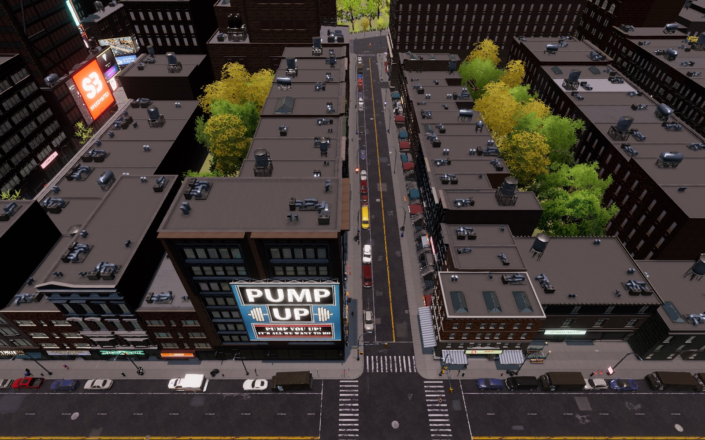

Persistent City · Big Ambitions mod

Every citizen has somewhere to be.
Persistent City gives the people of your city lasting identities, homes, daily routines and journeys. They keep living them while you're on the other side of town.
Persistent City · development build · in-game screenshot01 / 05